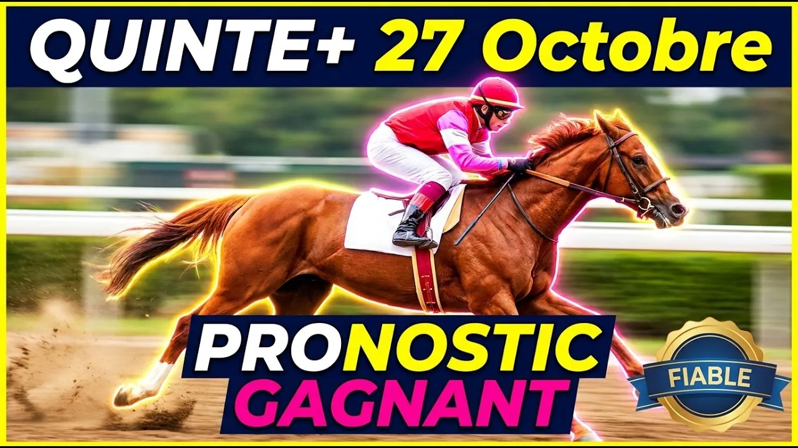

Imaginez une course où tout se joue en moins de soixante-dix-sept secondes. À plus de soixante kilomètres à l'heure sur le sable fibré de Deauville, la moindre seconde d'hésitation à l'ouverture des boîtes, le moindre mètre perdu dans le virage, et votre ticket part directement à la poubelle. Ce mardi 27 octobre 2026, l'hippodrome de la Touques accueille le Prix d'Utah Beach. Si vous analysez cette course comme un handicap classique sur gazon, vous courez droit à l'échec.
Au départ : quinze chevaux de trois ans et plus sur les mille trois cents mètres de la PSF, corde à droite. Handicap divisé de Classe 2 doté de cinquante mille neuf cents euros, référence plus seize virgule cinq et plus dix-sept. Le numéro seize Kenzel est non partant.
Sur ce tracé deauvillais, les numéros de stalle et la vitesse de démarrage sont cruciaux pour ne pas voyager en épaisseur. Entre le top-weight Sweet Chop à soixante-et-un kilos et demi et les chevaux du bas de tableau à cinquante-quatre kilos, sept kilos et demi séparent les extrêmes. Les stalles intérieures offrent un avantage décisif sur ce sprint rectiligne où chaque mètre compte.
Commençons avec le numéro un, Sweet Chop. Ce mâle de quatre ans entraîné par Amy Murphy porte le top-weight de soixante-et-un kilos et demi sous la selle de Tony Piccone, en valeur quarante-quatre virgule cinq. Crédité de cent trente-huit mille euros de gains, il ne faut pas le condamner sur son échec à Chantilly où il s'est retrouvé totalement enfermé. Avant cela, il alignait les podiums. Malgré son fardeau et la corde onze, sa classe l'autorise à viser une place d'honneur.
Le numéro deux, Michael The Great, est un trois ans redoutable préparé par Henri-Alexandre Pantall et monté par Stéphane Pasquier. Sur ce tracé deauvillais, son palmarès est parfait : deux sorties, deux victoires. Jamais plus loin que troisième lors de ses quatre dernières sorties, il s'élance de la stalle un pour longer le rail sans effort. Malgré sa valeur quarante-trois sous cinquante-neuf kilos et demi, il reste incontournable pour le podium.
Abordons le numéro trois, Zerostress, le doyen du peloton à dix ans. Préparé par Sascha Smrczek et piloté par Théo Bachelot avec des œillères australiennes, il totalise plus de deux cent vingt-huit mille euros de gains. Même s'il a encore de beaux restes, sa stalle seize tout en dehors constitue un handicap insurmontable sur treize cents mètres. Condamné à virer au large, nous prenons le parti de l'écarter.
Regardons le numéro quatre, Talentuoso, spécialiste absolu de ce parcours. Entraîné par Pierre-Emmanuel Dubois et monté par Marvin Grandin, ce hongre de cinq ans a couru quatre fois sur ce tracé l'hiver dernier sans quitter les quatre premiers, avec une victoire de Quinté+ à la clé. De retour sur sa surface de prédilection avec la stalle deux sous cinquante-sept kilos et demi en valeur quarante virgule cinq, il vise la victoire avec passion.
Le numéro cinq, Hello Carel, est un trois ans en plein essor entraîné par Gérald Mossé et monté par Maxence Marquette. Auteur de quatre victoires cette saison, il s'était classé quatrième sur ce parcours l'hiver dernier. Vite sur jambes et à l'aise sur le sable, il est très bien positionné avec la stalle cinq sous cinquante-six kilos et demi en valeur quarante. C'est un outsider séduisant pour vos jeux.
Le numéro six, Agiota, dépend de l'entraînement de Mauricio Delcher-Sanchez et de Pierre-Charles Boudot. Ce trois ans possède de la vitesse sous cinquante-six kilos et demi en valeur quarante, mais il reste sur deux échecs. Surtout, sa stalle quatorze complique nettement sa tâche. Malgré son jockey de talent, nous préférons faire l'impasse sur ses chances aujourd'hui.
Le numéro sept, Omicrone, est une femelle de six ans entraînée par Patrice Groualle et montée par Antoine Hamelin. Sur les mille trois cents mètres PSF de Deauville, elle compte deux podiums dont une victoire en quatre tentatives. Lauréate de deux Quinté+ en carrière, elle vient de prendre une belle cinquième place à Chantilly. Compétitive en valeur trente-huit virgule cinq avec la stalle six, elle garde une chance régulière pour les places.
Le numéro huit, Royalwood, est présentée par Corine Barande Barbe et pilotée par Frida Valle Skar. Créditée de près de deux cent mille euros de gains sous cinquante-cinq kilos en valeur trente-huit, cette femelle alterne le bon et le moins bon. Battue récemment et pénalisée par sa stalle treize en dehors, sa tâche s'annonce délicate. Nous la laissons de côté. Le numéro onze, Major Oak, dépend de l'entraînement de Marion-Florian Weissmeier et de la monte d'Hugo Lebouc. Malgré une baisse d'une livre accordée par le handicapeur en valeur trente-huit sous cinquante-cinq kilos, ses sorties récentes ne reflètent aucune progression. De plus, sa position dans la stalle douze l'obligera à subir la course. Ses chances semblent secondaires.
Passons au numéro neuf, Fire Rebel, notre second point d'appui. Ce hongre de cinq ans préparé par Agostino Spanu et monté par Fabien Lefebvre avait remporté le Quinté+ Prix du Tréport fin janvier sur ce tracé exact, devançant notamment Talentuoso. Le handicapeur l'a ramené en valeur trente-huit sous cinquante-cinq kilos. Avec la stalle trois, il trouve des conditions idéales pour se réhabiliter avec éclat.
Le numéro dix, Break Dance, mérite toute votre attention. Seconde pensionnaire de Gérald Mossé, cette pouliche de trois ans est confiée à Mickaël Barzalona sous cinquante-cinq kilos en valeur trente-huit virgule cinq. Excellente deuxième sur ce parcours récemment, elle retrouve la piste de son premier succès. Dotée d'une vive accélération finale et bien placée avec la stalle huit, elle détient une première chance pour le podium.
Le numéro douze, Crowdfunding, est un modèle de courage à l'âge de huit ans. Entraîné par Cédric Boutin et monté par Rosario Mangione, ce compétiteur infatigable aux deux cent quatorze mille euros de gains est en belle forme avec plusieurs accessits. Bien loti avec la stalle quatre sous cinquante-quatre kilos et demi, il donne toujours le meilleur. Face aux jeunes flyers, sa marge reste toutefois réduite.
Voici maintenant le joyau de notre sélection, le numéro treize, Fou Furieux. Ne tenez aucun compte de ses récents échecs sur gazon : ce protégé de Nicolas Caullery a été spécialement préparé pour cet engagement sur le sable deauvillais. Lauréat de Quinté+ sur PSF et déjà vainqueur sur ce parcours, sa valeur a chuté jusqu'à trente-sept. Sous cinquante-quatre kilos avec la monte de Maxime Guyon et la stalle sept, il est prêt pour vaincre avec passion.
Le numéro quatorze, Mikey, est un poulain de quatre ans mis au point par Antonio Joaquim Baptista Ribeiro De Abreu et confié à Alexis Lemaitre. Auteur de deux victoires cette saison et pris en valeur trente-sept sous cinquante-quatre kilos, il affiche une forme ascendante. Malgré sa stalle dix, sa maniabilité et son aptitude confirmée à la PSF en font un prétendant séduisant pour compléter la combinaison gagnante.
Terminons ce tour d'horizon avec le numéro quinze, Salalah. Entraînée par Jérôme Andreu et montée par Eddy Hardouin, cette femelle de cinq ans totalise cent vingt-huit mille euros de gains sous cinquante-quatre kilos en valeur trente-sept. Quatrième d'un réclamer sur ce tracé le mois dernier, elle fait toutes ses courses mais manque de marge face aux mâles d'élite. Nous lui préférons d'autres profils.
Pour établir une stratégie gagnante sur ce Prix d'Utah Beach, il faut impérativement respecter la mécanique de la vitesse sur le sable fibré. Les stalles intérieures et la capacité à jaillir des boîtes dictent l'allure avant le virage. Notre méthode associe un coup de poker au poids avec le numéro treize Fou Furieux, sublimé par Maxime Guyon, aux solides références de Talentuoso et de Fire Rebel qui ont déjà triomphé sur ce parcours. En y ajoutant les trois ans Break Dance, Hello Carel et Michael The Great, ainsi que la classe de Sweet Chop et la vitesse de Mikey, nous obtenons une sélection équilibrée alliant sécurité et gros rapports.
PRONOSTIC : 13 - 4 - 9 - 10 - 5 - 2 - 1 - 14
Rappel : 16 (Kenzel) est non partant
Regardez l'analyse complète sur YouTube :
▶ Pronostic Quinté Deauville 27 octobre
Bonne chance sur vos combinaisons, et à bientôt pour la suite des courses.